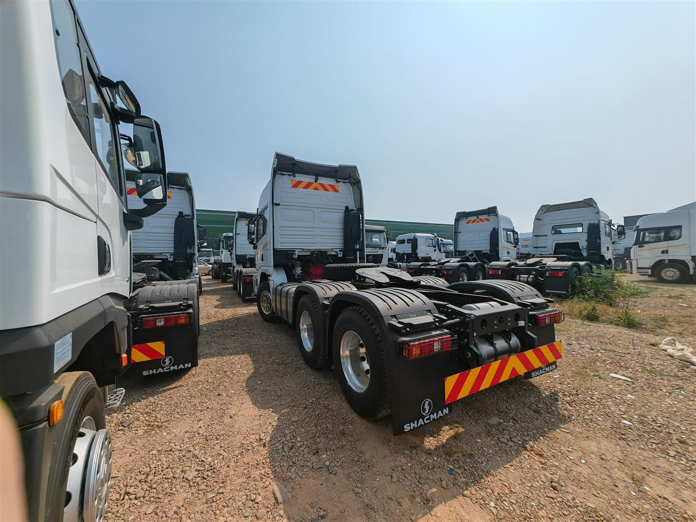

Direct answer: This guide is for overseas buyers evaluating the SHACMAN X5000 6x4 tractor truck for Tajikistan. The photo, title and article all refer to the same vehicle type, and final specifications should be confirmed according to the order.
Central Asia route questions
For Tajikistan and nearby Central Asian routes, buyers should think about mountain roads, temperature, fuel quality, trailer weight and maintenance access before choosing a tractor truck.
Trailer matching matters
A tractor head quotation should include the trailer type, cargo, gross weight and fifth-wheel height requirement. Container, flatbed, tanker and low-bed trailers can need different matching details.
Why fleet photos help
The image shows multiple SHACMAN tractor units, useful for fleet-buyer context. It supports an article about batch procurement, inspection consistency and export preparation.
Quotation inputs
Send target horsepower range, emission requirement, trailer type, road condition, quantity, destination port or land transport route, and any need for cold-region accessories.
- destination country, port and quantity;
- cargo or jobsite use, road condition and daily work cycle;
- target payload, body or tank volume, and local registration limits;
- preferred delivery term, inspection request and spare-parts needs.
Frequently asked questions
Is this a dump truck article?
No. The image and article are for SHACMAN tractor trucks.
Can it be matched with different trailers?
Yes. Trailer type and weight should be provided before quotation.
What is most important for Tajikistan routes?
Road gradient, temperature, fuel quality, trailer load and service planning are key checks.
Related product page: SHACMAN X5000 6x4 tractor truck. For price and configuration, use the RFQ form or WhatsApp.
Request a configuration quotation
Andy can help compare configuration, shipping and inspection details for your market.